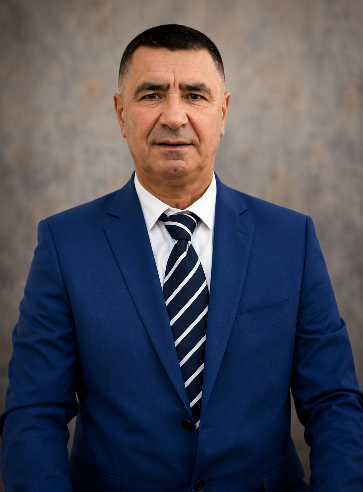
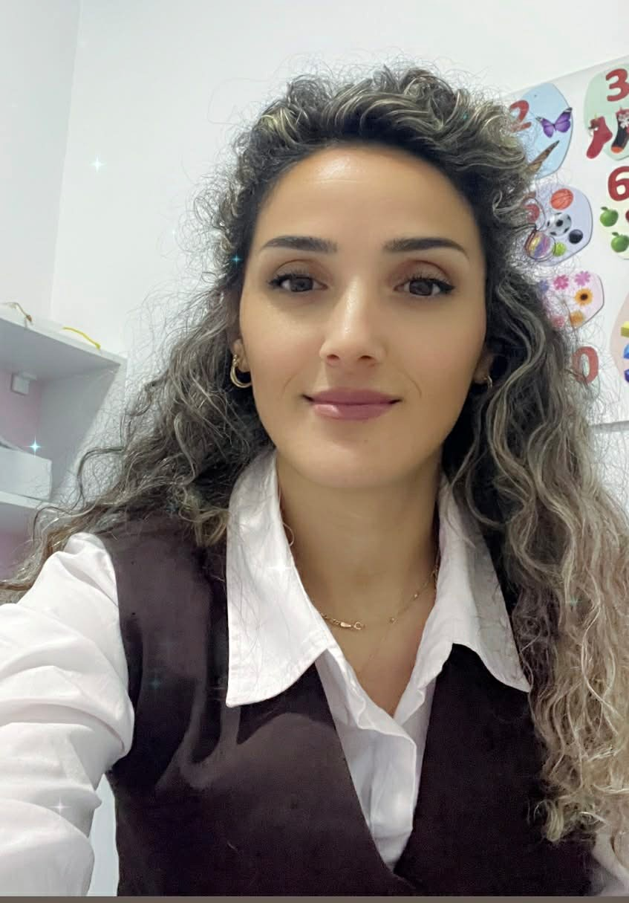
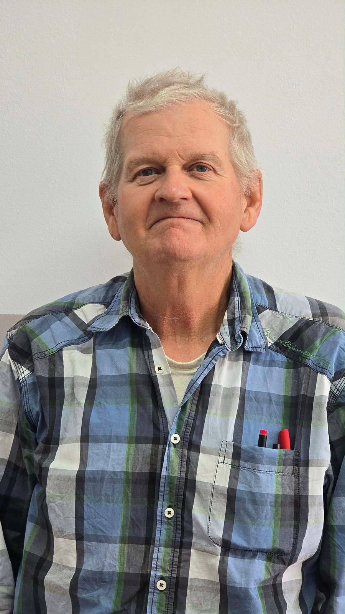
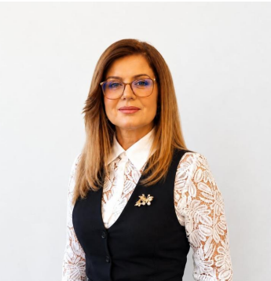

Në shkollën “Halil Alidema”, stafi ynë përbëhet nga arsimtarë të përgatitur profesionalisht, të cilët me përkushtim dhe përgjegjësi punojnë çdo ditë për edukimin dhe formimin e nxënësve.
Personeli udhëheqës dhe mbështetës i shkollës sonë.
Udhëheq dhe organizon aktivitetin edukativo-arsimor të shkollës me profesionalizëm dhe përkushtim maksimal.

Menaxhon administratën dhe dokumentacionin e shkollës.

Ofron mbështetje emocionale dhe psikologjike për nxënësit.


Mbështetje për nxënësit me nevoja të veçanta.
Mësuesit e ciklit fillor kujdesen për hapat e parë të nxënësve në rrugën e dijes. Ata ndërtojnë bazat e leximit, shkrimit, komunikimit dhe zhvillimit personal me përkushtim maksimal.
Arsimtarët e ciklit të mesëm të ulët udhëheqin nxënësit në zhvillimin akademik dhe përgatitjen për sfida më të mëdha, duke ofruar dije të avancuar dhe mbështetje profesionale.
Çdo arsimtar në shkollën tonë kontribuon në krijimin e një ambienti pozitiv, edukativ dhe motivues për nxënësit. Me përvojë, profesionalizëm dhe dashuri për mësimdhënien, stafi ynë është shtylla kryesore e suksesit të shkollës sonë.